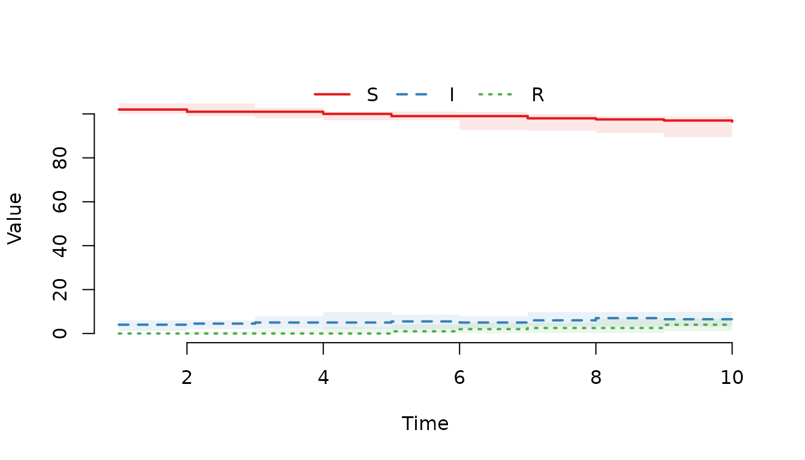
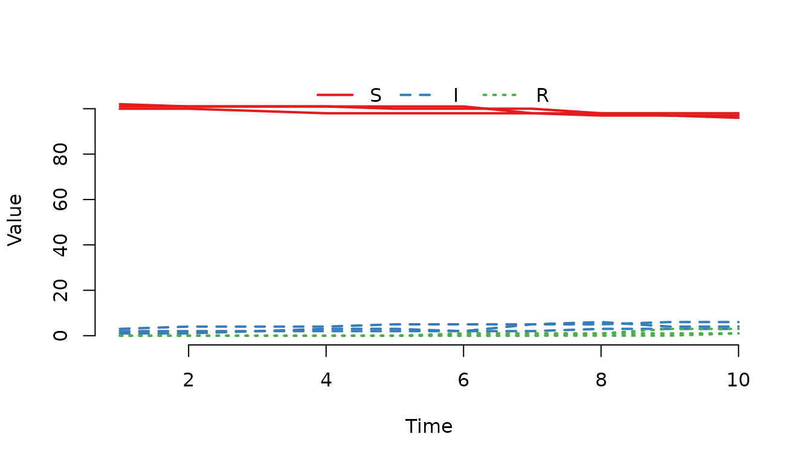

Post-process data in a trajectory
Stefan Widgren

Source: vignettes/post-process-data.Rmd
post-process-data.RmdAfter a model is created, a simulation is started with a call to the
run() function with the model as the first argument. The
function returns a modified model object with a single stochastic
solution trajectory attached to it. Trajectory data contains the state
of each compartment, recorded at every time-point in tspan.
This document introduces you to functionality in SimInf to
post-process and explore that trajectory data.
Extract trajectory data with trajectory()
Most modelling and simulation studies require custom data analysis
once the simulation data has been generated. To support this, SimInf
provides the trajectory() method to obtain a
data.frame with the number of individuals in each
compartment at the time points specified in tspan.
Let’s simulate 10 days of data from an SIR model with 6 nodes. For
reproducibility, we first call the set.seed() function and
specify the number of threads to use for the simulation.
library(SimInf)
set.seed(123)
set_num_threads(1)
u0 <- data.frame(S = c(100, 101, 102, 103, 104, 105),
I = c(1, 2, 3, 4, 5, 6),
R = c(0, 0, 0, 0, 0, 0))
model <- SIR(u0 = u0,
tspan = 1:10,
beta = 0.16,
gamma = 0.077)
result <- run(model)Extract the number of individuals in each compartment at the
time-points in tspan.
trajectory(result)## node time S I R
## 1 1 1 100 1 0
## 2 2 1 101 2 0
## 3 3 1 102 3 0
## 4 4 1 102 5 0
## 5 5 1 103 6 0
## 6 6 1 105 6 0
## 7 1 2 100 1 0
## 8 2 2 101 2 0
## 9 3 2 101 4 0
## 10 4 2 101 5 1
## 11 5 2 103 6 0
## 12 6 2 105 6 0
## 13 1 3 99 2 0
## 14 2 3 101 2 0
## 15 3 3 101 4 0
## 16 4 3 99 6 2
## 17 5 3 101 8 0
## 18 6 3 103 7 1
## 19 1 4 98 3 0
## 20 2 4 101 2 0
## 21 3 4 101 4 0
## 22 4 4 98 6 3
## 23 5 4 99 10 0
## 24 6 4 101 8 2
## 25 1 5 98 3 0
## 26 2 5 101 2 0
## 27 3 5 100 5 0
## 28 4 5 97 6 4
## 29 5 5 98 9 2
## 30 6 5 101 6 4
## 31 1 6 98 2 1
## 32 2 6 101 2 0
## 33 3 6 100 5 0
## 34 4 6 97 5 5
## 35 5 6 98 8 3
## 36 6 6 100 7 4
## 37 1 7 98 2 1
## 38 2 7 98 5 0
## 39 3 7 100 5 0
## 40 4 7 92 10 5
## 41 5 7 98 7 4
## 42 6 7 99 8 4
## 43 1 8 97 3 1
## 44 2 8 98 5 0
## 45 3 8 98 6 1
## 46 4 8 92 8 7
## 47 5 8 95 10 4
## 48 6 8 99 8 4
## 49 1 9 97 3 1
## 50 2 9 97 6 0
## 51 3 9 98 4 3
## 52 4 9 91 9 7
## 53 5 9 94 10 5
## 54 6 9 99 7 5
## 55 1 10 97 3 1
## 56 2 10 96 6 1
## 57 3 10 98 4 3
## 58 4 10 89 11 7
## 59 5 10 93 9 7
## 60 6 10 98 8 5Extract the number of recovered individuals in the first node.
trajectory(result, compartments = "R", index = 1)## node time R
## 1 1 1 0
## 2 1 2 0
## 3 1 3 0
## 4 1 4 0
## 5 1 5 0
## 6 1 6 1
## 7 1 7 1
## 8 1 8 1
## 9 1 9 1
## 10 1 10 1Extract the number of recovered individuals in the first and third node.
trajectory(result, compartments = "R", index = c(1, 3))## node time R
## 1 1 1 0
## 2 3 1 0
## 3 1 2 0
## 4 3 2 0
## 5 1 3 0
## 6 3 3 0
## 7 1 4 0
## 8 3 4 0
## 9 1 5 0
## 10 3 5 0
## 11 1 6 1
## 12 3 6 0
## 13 1 7 1
## 14 3 7 0
## 15 1 8 1
## 16 3 8 1
## 17 1 9 1
## 18 3 9 3
## 19 1 10 1
## 20 3 10 3Consult the help page for other trajectory() parameter
options.
Calculate prevalence from a trajectory using
prevalence()
Use the prevalence function to calculate the proportion
of individuals with disease in the population. The
prevalence() function takes a model object and a formula
specification, where the left-hand-side of the formula specifies the
compartments representing cases i.e. have an attribute or a disease. The
right-hand-side of the formula specifies the compartments at risk.
Let’s use the previously simulated data and determine the proportion
of infected individuals in the population at the time-points in
tspan.
prevalence(result, I ~ S + I + R)## time prevalence
## 1 1 0.03616352
## 2 2 0.03773585
## 3 3 0.04559748
## 4 4 0.05188679
## 5 5 0.04874214
## 6 6 0.04559748
## 7 7 0.05817610
## 8 8 0.06289308
## 9 9 0.06132075
## 10 10 0.06446541Identical result is obtained with the shorthand ‘I ~ .’
prevalence(result, I ~ .)## time prevalence
## 1 1 0.03616352
## 2 2 0.03773585
## 3 3 0.04559748
## 4 4 0.05188679
## 5 5 0.04874214
## 6 6 0.04559748
## 7 7 0.05817610
## 8 8 0.06289308
## 9 9 0.06132075
## 10 10 0.06446541The prevalence function has an argument level which has
a default level = 1. This returns the prevalence at the
whole population level. Since we have several nodes (farms if you like)
in the model now, we can also ask for the proportion of nodes with
infected individuals by specifying level = 2.
prevalence(result, I ~ S + I + R, level = 2)## time prevalence
## 1 1 1
## 2 2 1
## 3 3 1
## 4 4 1
## 5 5 1
## 6 6 1
## 7 7 1
## 8 8 1
## 9 9 1
## 10 10 1Finally, we may wish to know the proportion of infected individuals
within each node with level = 3.
prevalence(result, I ~ S + I + R, level = 3)## node time prevalence
## 1 1 1 0.00990099
## 2 2 1 0.01941748
## 3 3 1 0.02857143
## 4 4 1 0.04672897
## 5 5 1 0.05504587
## 6 6 1 0.05405405
## 7 1 2 0.00990099
## 8 2 2 0.01941748
## 9 3 2 0.03809524
## 10 4 2 0.04672897
## 11 5 2 0.05504587
## 12 6 2 0.05405405
## 13 1 3 0.01980198
## 14 2 3 0.01941748
## 15 3 3 0.03809524
## 16 4 3 0.05607477
## 17 5 3 0.07339450
## 18 6 3 0.06306306
## 19 1 4 0.02970297
## 20 2 4 0.01941748
## 21 3 4 0.03809524
## 22 4 4 0.05607477
## 23 5 4 0.09174312
## 24 6 4 0.07207207
## 25 1 5 0.02970297
## 26 2 5 0.01941748
## 27 3 5 0.04761905
## 28 4 5 0.05607477
## 29 5 5 0.08256881
## 30 6 5 0.05405405
## 31 1 6 0.01980198
## 32 2 6 0.01941748
## 33 3 6 0.04761905
## 34 4 6 0.04672897
## 35 5 6 0.07339450
## 36 6 6 0.06306306
## 37 1 7 0.01980198
## 38 2 7 0.04854369
## 39 3 7 0.04761905
## 40 4 7 0.09345794
## 41 5 7 0.06422018
## 42 6 7 0.07207207
## 43 1 8 0.02970297
## 44 2 8 0.04854369
## 45 3 8 0.05714286
## 46 4 8 0.07476636
## 47 5 8 0.09174312
## 48 6 8 0.07207207
## 49 1 9 0.02970297
## 50 2 9 0.05825243
## 51 3 9 0.03809524
## 52 4 9 0.08411215
## 53 5 9 0.09174312
## 54 6 9 0.06306306
## 55 1 10 0.02970297
## 56 2 10 0.05825243
## 57 3 10 0.03809524
## 58 4 10 0.10280374
## 59 5 10 0.08256881
## 60 6 10 0.07207207Consult the help page for other prevalence() parameter
options.
Visualize a trajectory with plot()
The plot() function is another useful way of inspecting
the outcome of a trajectory. It can display either the median and the
quantile range of the counts in all nodes, plot the counts in specified
nodes, or the prevalence. Below are some examples of using the
plot() function.
Plot the median and interquartile range of the number of susceptible, infected and recovered individuals.
plot(result)Plot the median and the middle 95% quantile range of the number of susceptible, infected and recovered individuals.
plot(result, range = 0.95)
Plot the median and interquartile range of the number of infected individuals.
plot(result, "I")
Use the formula notation instead to plot the median and interquartile range of the number of infected individuals.
plot(result, ~I)
Plot the number of susceptible, infected and recovered individuals in the first three nodes.
plot(result, index = 1:3, range = FALSE)Use plot type line instead.
plot(result, index = 1:3, range = FALSE, type = "l")
Plot the number of infected individuals in the first node.
plot(result, "I", index = 1, range = FALSE)
Plot the proportion of infected individuals (cases) in the population.
plot(result, I ~ S + I + R)Plot the proportion of nodes with infected individuals.
plot(result, I ~ S + I + R, level = 2)
Plot the median and interquartile range of the proportion of infected individuals in each node
plot(result, I ~ S + I + R, level = 3)Plot the proportion of infected individuals in the first three nodes.
plot(result, I ~ S + I + R, level = 3, index = 1:3, range = FALSE)
Please run a couple of plot(run(model)) to view the
stochasticity between trajectories. To find help on the SimInf plot
function for the model object run:
help("plot,SimInf_model-method", package = "SimInf")